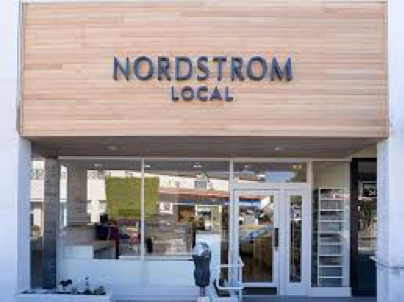

- Retail Must Adjust -
Amazon has clearly changed the way people do their purchasing and has made delivery easy because the items you purchased are available within two days via Prime. Amazon’s customer service is also great, if you are not satisfied with your purchase you can easily return it. Amazon has risen above the competition so much that other retail stores are struggling to keep up with the ever present force that is called Amazon. With the way Amazon is thriving, how will other retail stores that don’t offer the goods, services, and fast delivery that Amazon does survive in the digital age?
The answer could simply be to adjust. Since we are in a new age of shopping, retailers must keep current with what consumers are demanding of retail stores. If customers wish to purchase their goods more online than in person, a retail outlet may have to install some sort of program that keeps up with online purchasing.

One company who has managed to do just that is the ever popular Nordstrom’s. Nordstrom’s has been around for over one hundred years and is still thriving as a brand due to their openness to change.
Nordstroms has recently purchased two Seattle tech companies to help with the changes they have made. The recent change is a new store concept called Nordstrom Local that takes the customer on an experience more than just plain shopping. Nordstrom Local caters to the Millennials and Generation Z, and is a place where you can grab a cocktail, or espresso, then sit down with a stylist to help you do your shopping. No merchandise is sold at the store, instead, you and your stylist look at a virtual app of different clothes and makeup, and you can choose what you want to purchase through this app. As you sip on your coffee your clothes can be delivered to you, and then you can get your clothes properly fitted by the on site tailor that is available.
You can also order clothes online and pick them up at a more convenient time as well. This no nonsense approach to shopping only serves the online experience and doesn’t compete with it.Nordstrom Local is showing major success as a new way to shop, and it all has to do with Nordstroms acceptance of change. If Nordstrom had continued with its same way of brick and mortar retail, the stock may not be showing what it is showing today and sales may not be growing. Physical spaces still serve a purpose, yet retail stores need to re-think what that purpose is. Brick and mortar stores are left to choose, do they want to continue to have the same concept which can be harmful to their business, or will they take a chance and embrace the digital age? More than likely they will have to adapt and follow through with the change in order to continue doing business.